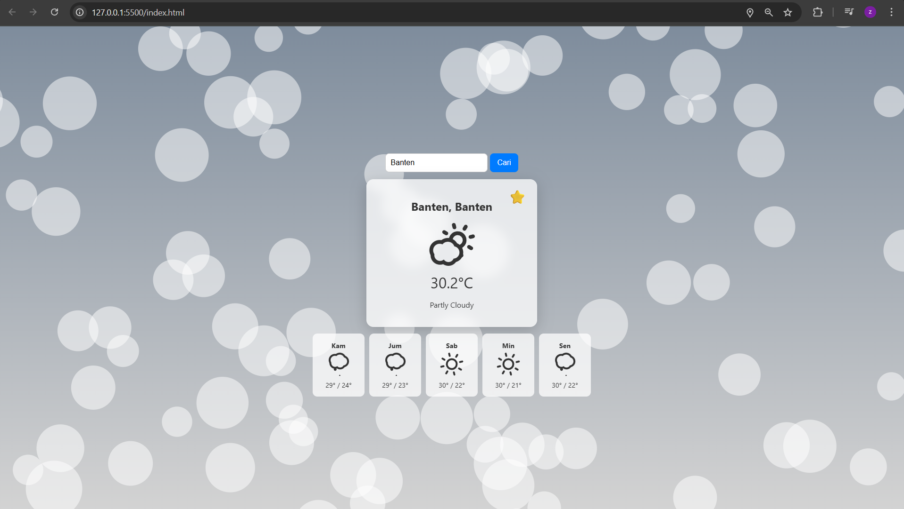
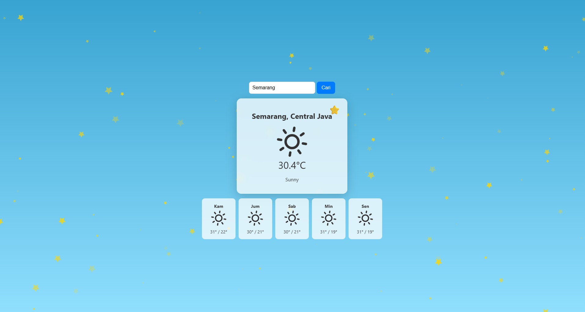
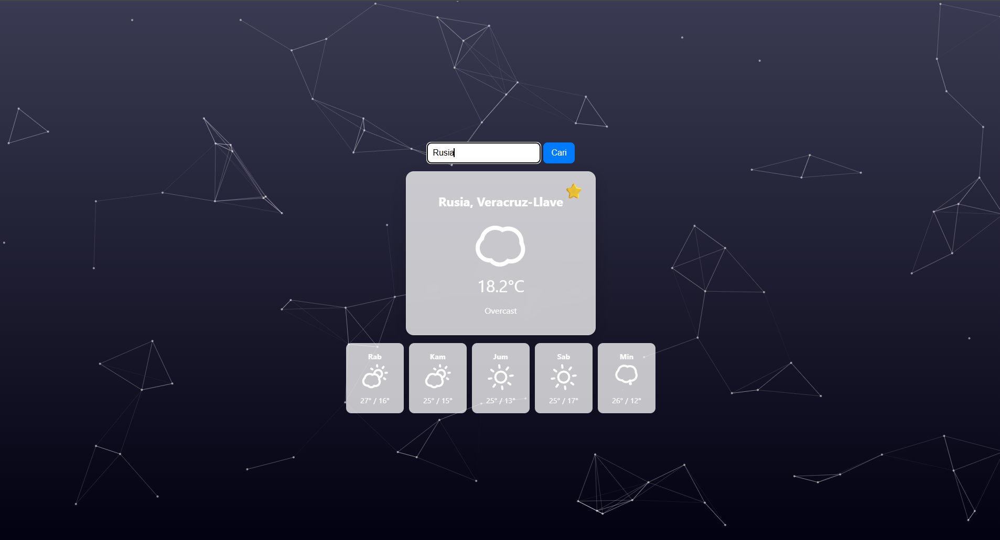
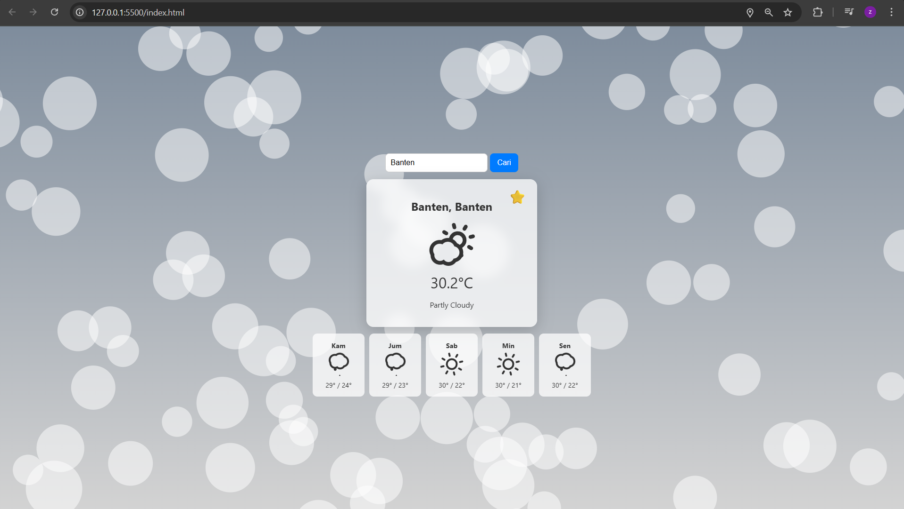
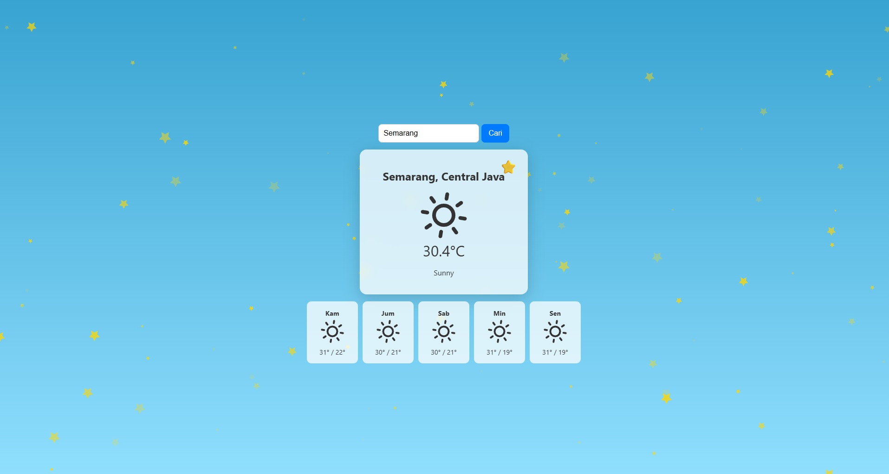
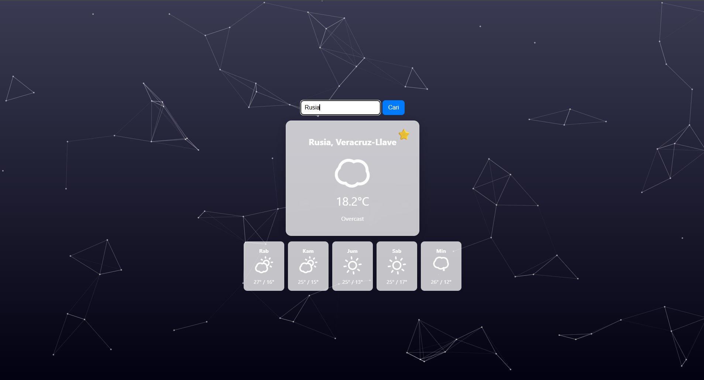

Aplikasi Cuaca Pro
Aplikasi web interaktif untuk menampilkan data cuaca real-time dengan latar belakang dan ikon yang dinamis sesuai kondisi cuaca.
 





Deskripsi Lengkap
Aplikasi Cuaca Pro adalah proyek frontend yang saya bangun untuk mempraktikkan manipulasi DOM, pemanggilan API, dan cara menciptakan pengalaman pengguna yang imersif. Aplikasi ini tidak hanya menampilkan data, tetapi juga mengubah seluruh tampilannya secara dinamis untuk merefleksikan cuaca saat ini, baik siang, malam, hujan, atau cerah, menggunakan partikel animasi dan ikon cuaca yang hidup.
Fitur Utama
- Prakiraan Cuaca Real-time & 5 Hari via WeatherAPI
- Latar Belakang & Partikel Animasi Dinamis (tsParticles.js)
- Ikon Cuaca Animasi yang Sesuai Kondisi (Skycons.js)
- Penyimpanan Kota Favorit Menggunakan localStorage
- Deteksi Lokasi Otomatis dengan Geolocation API
Teknologi yang Digunakan
HTML5
CSS3
JavaScript (ES6+)
WeatherAPI
tsParticles.js
Skycons.js